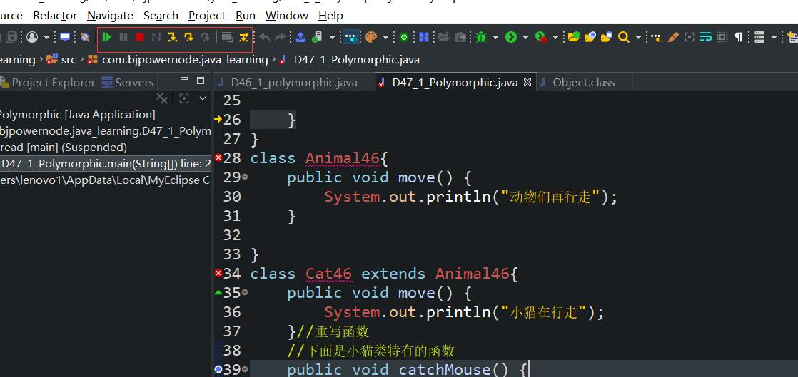
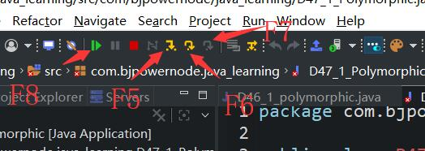
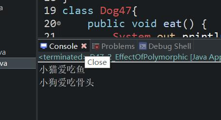
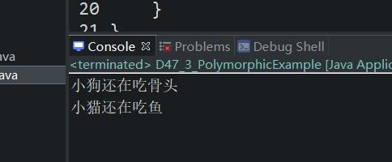

原文连接:https://www.cnblogs.com/ruigege0000/p/11783700.html
一、多态的语法
1.两个类之间没有继承关系的，使用多态是不能编译的。
2.无论向上还是向上转型，都需要有继承关系。
3.什么时候需要向下转型？
当调用的方法或者属性是子类型特有的，在父类型中不存在，就需要向下转型。
4.著名异常：java.lang.ClassCastException
package com.bjpowernode.java_learning;
public class D47_ {
public static void main(String[] args) {
Animal46 a3 = new Cat46();
//a3.catchMouse();//这里使用的方法在Animal46中不存在，但是在Cat46中存在，所以需要强制类型转换
Cat46 c4 = (Cat46)a3;
Animal46 a5 = new Bird46();
/**Cat46 c5 = (Cat46)a5;
*
* 上面这个程序编译是没有问题的，因为编译器检查到a5的数据类型是Animal46,Animal46和Cat46之间是存在
* 继承关系的，并且Animal46是父类型，Cat46是子类型，父类型转换为子类型叫做向下转换类型，语法是合法的，
* 程序虽然编译通过了，到那时程序在运行阶段会出现异常，因为JVM堆内存中真是存在的对象是Bird类型，Bird
* 对象是无法转换为Cat对象的，因为两种类型之间不存在任何继承关系此时就会出现著名的异常:
* java.lang.ClassCastException
* 类型转换异常，这种异常总是在“向下转型”的时候会发生。
*可以修改为:
*if（a5 instanceof Cat46）{
* Cat46 c5 = (Cat46) a5;}
*else if(a3 instanceof Bird46){
* Bird46 b5 = (Bird46) a5;}
*/
}
}
class Animal46{
public void move() {
System.out.println("动物们再行走");
}
}
class Cat46 extends Animal46{
public void move() {
System.out.println("小猫在行走");
}//重写函数
//下面是小猫类特有的函数
public void catchMouse() {
System.out.println("小猫是会抓老鼠的");
}
}
class Bird46 extends Animal46{
public void move() {
System.out.println("小鸟在飞翔");
}
}
注意：
（1）以上异常只有在强制类型转换的时候才会出现，也就是说“向下转型”存在隐患（编译通过了，到那时运行出错了）
（2）向上转型，只要编译通过了，运行一定不会出错.Animal46 a1 = new Cat46()
（3）向下转型，运行可能会出错，：Animal46 a1 = new Cat45();Bird46 b1 = (Bird46)a1;
5.如何避免向下转型出现的ClassCastException呢？
使用instanceof运算符可以避免出项上述情况，怎么用呢？
（1）格式：这个后面的数据类型是它在堆内存中的实际存储的数据类型。
（引用 instanceof 数据类型名）
（2）以上运算符的执行结果是布尔类型，结果可能是true/false
（3）关于运算结果true/false
假设：（a instanceof Animal）
true表示：a这个引用指向的对象是一个Animal类型
false表示：a这个引用指向的对象不是一个Animal类型
6.java规范中要求：在进行强制类型转换之前，建议采用instanceof运算符进行判断，避免ClassCastException异常的发生。
二、代码调试

快捷键：
F5：进入到该程序中
F6：下一步
F7：当前方法结束
F8：执行下一个断点

四、多态的作用
1.多态在实际开发的作用，以下以主人喂养宠物为例说明多态的作用：
（1）分析：主人喂养宠物这个场景要实现需要进行类型的抽象：
主人（类）
主人可以喂养宠物，所以主人有喂养的这个动作
宠物（类）
宠物可以吃东西，所以宠物有吃东西的这个动作
（2）面向对象编程的核心：定义好类，然后将类实例化为一个对象，给一个环境驱使一下，让各个对象之间协作起来形成一个系统
（3）多态的作用
先举个不使用多态的例子
package com.bjpowernode.java_learning;
public class D47_2_EffectOfPolymorphic {
public static void main(String[] args) {
Master47 m1 = new Master47();
Cat47 c1 = new Cat47();
m1.feed(c1);
Dog47 d1 = new Dog47();
m1.feed(d1);
}
}
class Cat47{
public void eat() {
System.out.println("小猫爱吃鱼");
}
}
class Dog47{
public void eat() {
System.out.println("小狗爱吃骨头");
}
}
class Master47{
public void feed(Cat47 c) {
c.eat();
}
//函数重载一下，要是养小狗也得调用
public void feed(Dog47 d) {
d.eat();
}
}

从上面的例子可以看出来：这种方式没有使用java语言中的多态机制，存在的缺点：Master47的扩展力很差，因为只要加一个新的宠物，Maset47这个类就要添加新的方法。
我们补充几个概念：
提高程序的耦合度（解耦合），提高程序的扩展力（软件开发的一个很重要的目标）
我们日v行：面向抽象编程不要面向具体过程编程，面向抽象编程的好处是：耦合度低，扩展能力强。
package com.bjpowernode.java_learning;
public class D47_3_PolymorphicExample {
public static void main(String[] args) {
Pet pDog = new Dog47_2();
Pet pCat = new Cat47_2();
Master47_2 m2 = new Master47_2();
m2.feed(pDog);
m2.feed(pCat);
//我们利用多态就可以做到随便养宠物，将宠物作为父类
}
}
class Pet {
public void eat() { }
}
class Cat47_2 extends Pet {
public void eat() {
System.out.println("小猫还在吃鱼");
}
}
class Dog47_2 extends Pet {
public void eat() {
System.out.println("小狗还在吃骨头");
}
}
class Master47_2{
public void feed(Pet p) {
p.eat();
}
}
五、源码：
D47_1_polymorphic.java
D47_2_EffectOfPolymorphic.java
D47_3_PolymorphicExample.java
地址：
https://github.com/ruigege66/Java/blob/master/D47_1_polymorphic.java
https://github.com/ruigege66/Java/blob/master/D47_2_EffectOfPolymorphic.java
https://github.com/ruigege66/Java/blob/master/D47_3_PolymorphicExample.java
2.CSDN：https://blog.csdn.net/weixin_44630050（心悦君兮君不知-睿）
3.博客园：https://www.cnblogs.com/ruigege0000/
4.欢迎关注微信公众号：傅里叶变换，个人公众号，仅用于学习交流，后台回复”礼包“，获取大数据学习资料